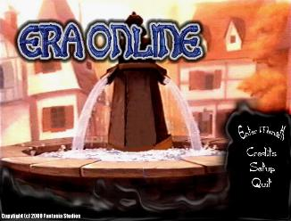
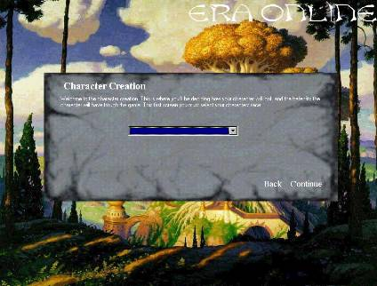

Now lets get into it ! Once you have the game installed and made sure it runs on your machine, you probably want to play right away. But remember, reading the manual first is always the wisest choice ! After the game has patched itself, the game intro will run. At any time you want to cancel this, press ESC. Your screen should now probably be showing this:

This is the main menu. Nice isn`t it ? From here you have various choices. You can choose to view the credits, to quit the game or to enter the game. Now, when you are ready to start, click Enter Menath. You will now be asked if you want to create a new character or to play an already existing one. If you choose to play an already existing one, you have to type in the characters name and the characters password and you will resume playing the character. Now lets make a new character ! Now choose to make a new character and you should see this:

From now on trough the character creation everything should be easy to
understand. Simply follow the instuructions. First off, you are going to select the
race of your character. This will affect your appearance and where you can begin
in the world. Read the Races & Classes section to find out more about this.
When done click Continue and you will be taken to the next screen which is very
similar to this one. Here you are going to select your class or occupation. This
will affect your skill settings and what equipment you can and cannot use. After
doing this click Continue again. Just follow the instructions from there on and
soon you will find yourself in the game world.
Once you are in the game world there is several things you can do. First off,
you should read the information board, that should be in the near vicinity of you.
After that, explore and try learning how the basics work. When you feel comfortable,
you should try finding some other players which can show you what to do first or
just follow your own path to fortune, fame and greatness !